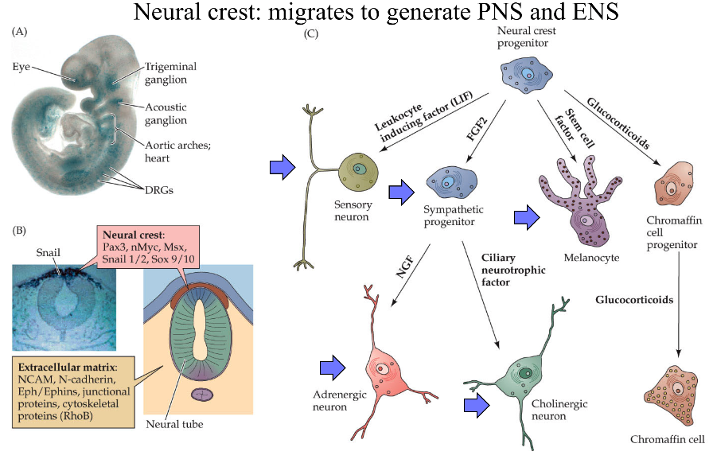
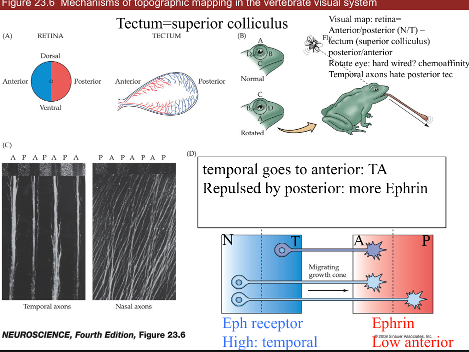
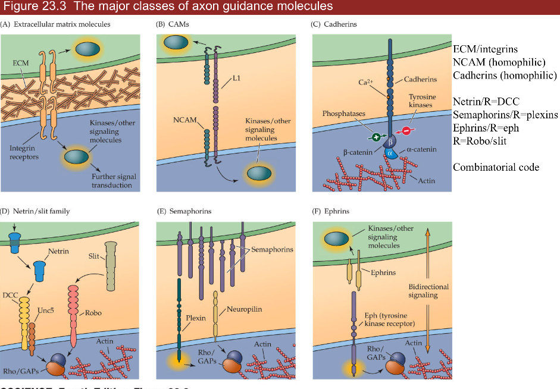
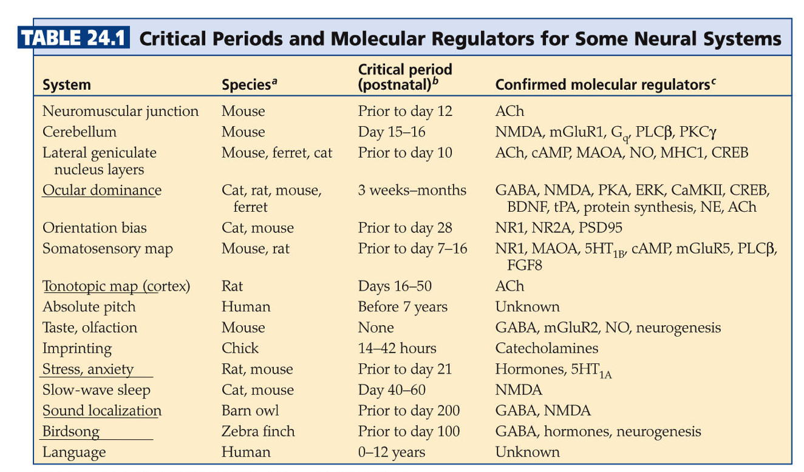

data sense
view markdownnotes from Neuroscience, 5th edition + Intro to neurobiology course at UVA
22 early development
- ways to study
- top-down: rosy retrospection
- bottom-up: e.g. LTP/LTD
- human disease: stroke-by-stroke
- development=ontogeny
- timeframe
- month 1 - gastrulation
- most sensitive time for mom
- month 2-5 - cells being born
- up to year 2 - axon guidance / synapse formation
- month 1 - gastrulation
- gastrulation - process by which early embryo undergoes folds = shapes of NS
- diseases
- spina bifida - neural tube fails to seal
- vitamin B12 can fix this
- anencephaly - neural tube fails to close higher up
- spina bifida - neural tube fails to seal
- parts
- roofplate at top (back)
- floorplate on bottom (stomach)
- neural crest - pinches off top of roofplate
- diseases
- neuroblasts = classic stem cells
- assymetric division - cells generate themselves and differentiated progeny
- ultimate stem cell - fertilized eggs
- differentiation
- cells made by neuroblasts decide what they are going to become
- morphogens
- BMP - roofplate
- cyclopia - fatal defect in BMP
- Hedge hogs - at floor plate
- Retinoids - axial, affect skin
- affected by thalidomide - helps morning sickness but causes missing limb segments
- also affected by accutane
- FGFs - axial symmetry
- Wnts - skin, gut, hair
- loss of wnts is loss of hair
- BMP - roofplate
- floor plate loses function after embryogenesis except glioblastoma
- measure BMP and HH gradient to figure out where you are
- treat ALS by adding HH to make more alpha motor neurons 1. dorsal direction
- roofplate makes BMP
- low HH - interneurons, sensory neurons (ex. nociceptors)
- even BMP/HH - sympathetic
- high HH - more motor neurons
- floorplate makes HH (hedge hog)
- axial specification (anterior/posterior)
- tube swells into bulbs that become cerebellum, superior colliculus, cortex
- homeotic genes = hox genes - set of genes (transcription factors) in order on chromosome
- order corresponds to order of your body parts
- rhombomeres - segments in brainstem made by hox gene patterns
- lineages
- when neuroblast is born, starts producing progeny (family tree of neuron types)
- very often, cells are produced in certain order
- timing: cell-cell interations and tyrosine kinases determine order
- first alpha neurons, then GABAergic to control those, last is glia
- neural crest function
- migratory - moves out and divides:

- neuroblastoma - developed early - severe problem because missing parts of NS
- makes DRG and associated glial cells (schwann cells)
- makes sympathetic NS and target ganglia, enteric NS, parasympathetic NS targets
- makes melanocytes - know how to migrate and divide but can make melanoma (cancer)
- migratory - moves out and divides:
- cortex is made inside out (6->1)
- starts with stem cells called radial glia
- cortical dysplasia - missing a layer / duplicating a layer
- small part with 2 layer 3s - severe epilepsy
-
cell death
- 1/2 of cells die in development
- axon guidance (ch 23)
- each cell born and axon grows and are guided to a target
- dendrite basically follows same rules
- synapse formation (ch 23, 24)
- pruning and plasticity
- NMDA receptor type
- form synapses and if they don’t look right - get rid of them
- K1/K-1 synapses breaking and forming
- after age 21, K-1 starts increasing and net loss of synapses
23 circuit formation
- growth cone - motile tip of axon
- actin tip
- lamellipodium - sheet (hand)
- filopodium - huge curves (fingers)
- chemo attraction (actin assembly) and chemo repulsion (actin disassembly)
- microtubule shaft - tubulin is much more cemented in
- mauthner cell of tadpole - first recorded growth cone
- can’t regrow (that’s why we can’t regrow spinal cord)
- actin tip
- signals in growing axons
- pioneer axons (Betz cells) are first - often die
- follower axons (other Betz cells) can jump onto these and connect before pioneer dies
- trophic support - neuron survives on contact
- frog tectum (has superior colliculus) with map of retina:

- ephrin (EPH) repulses axon
- retinal NT -> tectum AP
- axons have different amount of EPH receptors (in retina temporal has more than nasal)
- gradient of EPH (in tectum anterior has less than posterior)
- if we flip eye upside down (on nasal-temporal axis), image will be upside down
- ephrin (EPH) repulses axon
- 3 classes of axon guidance molecules:

- ECM/integrins
- NCAM (homophilic—binds to another neuron that is NCAM),
- follower neurons bind to pioneer through NCAM-NCAM interactions
- Cadherin (homophilic)
- involved in recognition of being some place
- 4 important ligands/receptors
- ephrins/eph
- gradient of eph receptor
- netrin/dcc = guidance moleculereceptor = DCC
- attracts axons to floorplate (midline)
- cells without DCC don’t cross midline
- slit/robo - receptor is slit
- chases axons off (away from midline)
- axons not destined to cross midline are born expressing robo
- axons destined to cross the midline only express robo after crossing
- if DCC (-) and robo (-) will continue wandering around
- robo 4 is associated with Tourette’s
- semaphorins/plexins
- combinatorial code - use combinations of these to guide axons
- these are the same genes that move cancer around
- ephrins/eph
- synaptic formation
- neuroexins - further recognition
- turn up in autism and schizophrenia
- DSCAM
- associated with Down’s syndrome
- doesn’t use gradients
- makes different kinds of proteins by differential slicing
- neuroexins - further recognition
- competition
- neurotrophins are secreted by muscle
- in early development, a muscle fiber has many alpha motor neurons innervating it
- all innervating neurons suck up neurotrophin and whichever sucks up most, kills all the others
- eventually, each muscle fiber is innervated by one alpha motor neuron
- only enough neurotrophin in target cells for a certain number of synapses
- happens everywhere
- ex. sympathetic ganglia
- ex. sensory neurons in skin get axons to correct cell types based on neurotrophin
- merkel - BDNF
- proprioceptor - NT3
- nociceptor - NGF
- ex. muscles - produce NGF
- treating ALS with NGF hyperactivates sensory neurons with trkA -> causes chicken pox
- signals/receptors
- NGF - trk a (Trk receptor - survival signaling pathways)
- BDNF - trk b
- NT3 - trk b and c
- NT4/5 - trk b
- all bind p75 (death receptor)
- want to keep neurotrophins local, because there aren’t that many of them
- neurotrophins are secreted by muscle
24 plasticity in systems
- experience-dependent plasticity -

- ex. ducks imprinting is non-reversable
- learning is crystallized during critical period
- CREB and protein synthesis
- NMDA receptors
- epigenetics - histones control transcription and other things
- follow Hebb’s postulate - fire together, wire together
- different eyes firing together will sync up (NMDA receptors to strengthen synapses)
- systems
- ocular dominance
- left/right neurons terminate in adjacent zones
- LGN in cortex uses efferents just like superior colliculus
- label injected into retina can make it into cortex
- cat experiments
- some cells see only one eye, some see both
- cats need to form visual map in short critical period (<6 days)
- this is why you need cochlear implant early
- both eyes open - equal OD columns
- one eye closed - unequal OD columns
- branches coming out of LGN neurons grow more branches based on relative light exposure (they compete for eye’s real estate)
- strabismus = lazy eye - poor coordination with one of the muscles
- one eye is not quite seeing
- treat with patch on good eye -> allows bad eye to catch up since eyes compete for ocular dominance columns
- more stimulus = more branches
- dye from retina goes through thalamus into cortex
- rabies virus does same thing: cell->ganglion->brain
- tonotopic map
- connection between MSO and inferior/superior colliculus
- playing one tone increases representation
- playing white noise disorganizes map
- birdsong
- hear song 10-20 times when young - crystallized
- afterwards can’t learn new skills
- stress
- early stress sets stress points later in life
- uses serotonin
- ocular dominance
- shifts
- superior colliculus - integrate visual, auditory, motor to get X,Y coordinate
- auditory map - plastic (but only when young)
- visual map - not plastic
- if you shift visual map (with a prism), auditory map can shift over to meet the visual
- optic neuritis - ms optic nerve disease that shifts map
- only young animals can shift unless they were shifted before and are now unadapting
25 repair and regeneration
- full repair - human PNS - skin, muscles
- 1-2 mm/day growth - speed of slow axonal transport
- thinnest axons first (thermal receptors and nociceptors)
- proprioceptors last
- process
- perinerium / schwann cells surrounds axons - helps regeneration
- growth cones that are cut form stumps -> distal axons degenerate = walerian degeneration
- macrophages come in and eat up the damaged stuff
- neurotrophins are involved
- miswiring is common - regrow and may not find right target
- bell’s palsy - loss of facial nerve - recovers with miswiring (salivary / tear)
- neuromuscular junctions (NMJ)
- damaged cells leave synaptic ghost = glia and protein matrix for nerve to regrow into
- repairs easily after heavy training
- no repair / glial scar - human CNS
- no ghost because so spread out
- glia cover wound (scar) but can’t develop further
- has astrocytes and oligodendrocytes (types of glial cells)
- don’t support regrowth
- involved in scarring
- microglia - from immune system
- control inflammation
- release cytokines
- nogo - protein that blocks regrowth (but there are other proteins as well)
- we try repairing with shunts - piece of sciatic nerve from other part of body with schwann cells from PNS to try to repair a connection in the CNS
- stem cell regeneration - put new neurons being formed, 2 places in humans
- non-human examples
- floor plate of lizards can make new tail
- fish retina always making new cells
- canary brain part has stem cells that learn new song every year
- small C14 incorporation after early development - suggests we don’t regenerate neurons - C14 was from nuclear testing
- human areas that do regenerate
- hippocampus
- memories you store temporarily
- subventricular zone makes glomeruli in olfactory bulb cells
- turnover daily
- sensory neurons and their targets constantly die and regenerate
- niche - places where stem cells stay alive
- ex. places in CNS with WINT molecular signals
- hippocampus
- non-human examples
- damage control - remove these signals for apoptosis = cell death
- glutamate increase - excitotoxicity
- can stop with NMDA blockers
- induce a coma by cooling them down or GABA drugs
- cytokines increase - immune system (like neurotrophins), inflammation
- hypoxia/stress
- neurotrophin withdrawal
- in stress times neurotrophin goes down
- glutamate increase - excitotoxicity